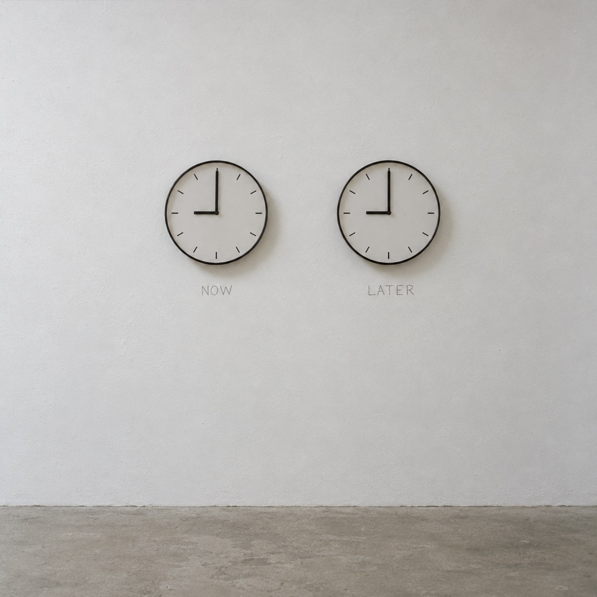

No. 001 ·
Twelve Hours Apart
Instruction

Two identical analog wall clocks, two batteries, two words written in pencil on the wall. Dimensions variable.
Note
The two clocks look the same and agree to the second. The only difference between them is a fact you have to be told. The piece descends from Felix Gonzalez-Torres's "Untitled" (Perfect Lovers), two store-bought clocks set to the same time, and from On Kawara's date paintings, where the day itself is the subject. The written labels borrow from Joseph Kosuth's habit of letting words decide what an object is. It is the first work in a series that appears every twelve hours.
Image prompt
A documentary photograph of a conceptual art installation in an empty white gallery. Two identical, plain, round analog wall clocks hang side by side at eye level on a smooth white wall, about 15 cm apart. Each clock has a thin black rim, a white face, simple black hour marks with no numerals, and black hour and minute hands, with no second hand. Both clocks show exactly 9:00: the hour hand points straight at the 9 position and the minute hand points straight up at 12. Beneath each clock, one word is written by hand in grey pencil directly on the wall, in small plain capital letters: NOW under the left clock, LATER under the right clock. A strip of pale grey concrete floor is visible at the bottom edge. Soft, even, diffused daylight from the left, faint shadows under each clock. Straight-on frontal view with the camera at clock height, centered, symmetrical composition, lots of empty wall around the clocks. Muted neutral colour, slight film grain, in the style of 1960s and 1970s conceptual art documentation photographs. Square format, 1:1. No people, no other objects, no logos, no brand names, no other text.